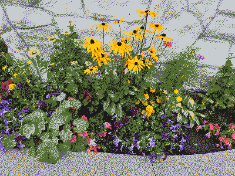
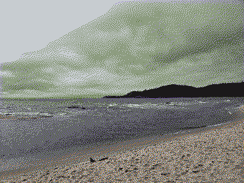

<html lang="en"></html>
  <head>
    <meta charset="UTF-8" />
    <meta name="viewport" content="width=device-width, initial-scale=1.0" />
    <meta name="wordcount" content="1530">
    <meta name="postdate" content="2025-12-31">
    <title>&#10028; 2025 &#10028;</title>
    <link rel="icon" type="image/x-icon" href="img/pxflower3.png">
    <link rel="stylesheet" type="text/css" href="../style.css" />
    <link rel="stylesheet" type="text/css" href="blog_style.css" />
    <style>
.card{
    height: 300px;
    width: 200px;
    margin:10px;
    
    perspective: 600px;
    transition: .5s;
    h4 {
      background-color:rgba(0, 0, 0, 0.9);
      border-radius: 5px 5px 0 0;
    }
    p {
      background-color:rgba(0, 0, 0, 0.9);
      font-size:12px;
      color: rgb(152, 238, 219);
      }
    &:hover .card-front {
        transform: rotateX(-180deg);
    }
    &:hover .card-back {
        transform: rotateX(0deg);
    }
}

.card-front {
    height: 100%;
    width: 100%;
    border-radius: 6px;
    position: absolute;
    background-image: url(blog_img/Tarot_Card_Back.png);
    background-position: 50% 50%;
    background-size: cover;
    background-color: #000000;
    backface-visibility: hidden;
    transform: rotateX(0deg);
    transition: .5s;
    text-align: center;
}

.card-back {
    height: 100%;
    width: 100%;
    border-radius: 6px;
    background-position: 50% 50%;
    background-size: cover;
    display: flex;
    flex-direction: column;
    justify-content: space-between;
    background-color: #000000;
    backface-visibility: hidden;
    transform: rotateX(180deg);
    transition: .5s;
    text-align: center;
}
.back1 {
  background-image: url(blog_img/Wands01.png);
}
.back2 {
  background-image: url(blog_img/Swords14.png);
}
.back3 {
  background-image: url(blog_img/TheFool.png);
}
details {
  text-align: center;
  summary {
    color: rgb(152, 238, 219);
    text-shadow: 0 0 10px rgba(160, 240, 233, 0.5);
    }
}

    </style>
    <script src="https://kit.fontawesome.com/85bfb0bd19.js" crossorigin="anonymous"></script>
  </head>
 <!-- Page template: https://repth.neocities.org/theme -->
<body>
  <button onclick="topFunction()" id="to_top" title="Go to top"><span style="font-size:24px;">&#8593;</span>&nbsp;&nbsp;to top</button>
  <div id="container">
   
    <div class="logo">
      
    </div>

    <div id="box">
    <div id="contentboxes">
	  <div id="gridbg">
    <main>
      <!-- WEBLOG BOX -->
      <div>
        <h2>midnight solarium’s new years raspberry grapefruit extravaganza: 2025 edition</h2>
        <p class="blogdetail"><time datetime=""></time><span id="wordcount"> • word count: ...</span></p>

        <a href="../weblog.html"><i class="fa-solid fa-circle-arrow-left" style="color:#f2cf5c;text-shadow:0 0 10px rgba(243, 247, 118, 0.2);"></i> go back </a>

        <div style="display:inline;float:right;width:fit-content;">
        <script src="../fontchanger.js"></script>
      </div>

      <hr />
      <article>
        <p>As webmaster of this digital solarium and as a fellow living flesh haver, I give you my sincerest <strong>congratulations on surviving another year</strong>! May the new year be infused with either natural or artificial <em>raspberry grapefruit flavoring</em>! As a final act of hubris against all that seeks to defile and dishonor us, I thought it would be fun to go over how the last year has tasted.</p>
        <h3>Annual Award Show Pre-Show Awards</h3>
        <p>Are award shows still relevant? In an age of unprecedented social isolation on a widespread scale, aided by online species that funnel people into niches rather than bringing people together, it becomes near impossible for <span class="tooltip">one man</span><span class="tooltiptext">…it probably doesn’t help that I live under a rock. I don’t know what the deal is with that horse girl gacha game everyone is horny over and im not gonna pretend otherwise.</span> to create a year-end celebration that holistically reflects the broader experiences of an entire year.</p>
        <p>But goddammit, I’m gonna try! The monoculture is dead but I will desecrate its corpse for your entertainment; you’re welcome; this is your fault.</p>
        <h4>Year of the Year: 2025</h4>
        <p>Nobody can deny that 2025 was very 2025. Unless you use a completely different calendar system??? If you use something other than the Gregorian calendar in your day-to-day life then please contact me and I will have this award revoked. Probably. Eventually.</p>
        <div class="pic left" style="width:274px;">
          <h2 class="subheader">flowers.png</h2>
          <figure></figure>
        </div>
        <h4>Flowers of the Year: These Ones</h4>
        <p>idk i stumbled across them and think they’re pretty neat :&#41;</p>
        <h4>Movie Deemed “Too Anime” of the Year: Kpop Demon Hunters</h4>
        <p>We all know someone (probably over the age of 50) who would certainly love this movie if it looked exactly like a Pixar movie (or, if they’re really over 50, an Illumination movie). But it doesn’t, so they won’t go anywhere near it. RIP meemaw you would have shipped RuJinu if they were both bunnyrabbits in Zootopia 2.</p>
        <div class="pic right" style="width:304px;">
          <h2 class="subheader">superior.png</h2>
          <figure></figure>
        </div>
        <h4>Lake of the Year: Lake Superior</h4>
        <p>This year I went on a road trip across Canada with my mother and sister and I didn’t post about it online because I dread the day that my life becomes content. But I feel it integral to inform the world that I am now intimately familiar with Lake Superior. Mostly on account of how big it is. You expect me to spend <em>all that time</em> driving alongside her and not develop an intimate connection? Perhaps my brain is so atrophied from years living in the Canadian prairies that any body of water is bound to make me hallucinate sirens. Perhaps if I hadn’t gone on this road trip, an especially deep puddle would do. But Lake Superior happened to be the lake that broke my brain and for that it has earned commendation.</p>
        <h4>Book of the Year: I, Robot</h4>
        <p>I briefly considered listing that one romantasy book about the crow boy who eats plastic, but that meme is already dead. Then I thought about naming an unironically good book that came out this year, but I realized <span class="tooltip">I don't pay attention</span><span class="tooltiptext">I’m not proud of that fact, but it’s the truth.</span> to nonfiction novels that are published within the past decade [] But Asimov? That shit is evergreen. But also extremely salient right now in particular. Idk <strong>just read the robot books i promise theyre good</strong>.</p>
        <h4>Failed Attempt at Masochism of the Year: My New Tattoo</h4>
        <p>I got my first tattoo this year! No I will not share pictures; just imagine something really really cool. I have no regrets about the tattoo except for maybe the placement, and that’s purely because I expected a lot more pain than I received. I’m gonna be honest: I feel a little underwhelmed. Yes I realize I am potentially revealing way too much about myself. Feel free to leave your psychoanalysis inside midnight solarium’s official guestbook which is accessible to the entire public including young children. </p>
        <h4>Youtube Channel of the Year: <a href="https://www.youtube.com/channel/UC4zBt9AGahhIRoFMxxHxaUw">GAKHED</a></h4>
        <p>It has come to my attention that most people on Earth have never watched a GAKHED video, but if you’re the kind of person who reads highly subjective end-of-year blogs on obscure retro-inspired indie websites, chances are that you are GAKHED’s target demographic.</p>
        <h4>midnight solarium of the Year: midnight solarium</h4>
        <p>It has come to my attention that even fewer people on Earth have visited this solarium, but I have reason to believe that 100% of the people reading this are visitors of the website, so I’m bending the rules to be self-congratulatory. The solarium has been operating for over a year and a half, and although updates in the past several months have become less frequent, the site is far from being abandoned. Even as life outside the solarium becomes chaotic, this digital space continues to be a refuge and a chance to nurture new ideas alongside visitors like you ^.^</p>
        <h3>Words of the Year (Proven 100% Accurate)</h3>
        <p>This year Merriam-Webster named “slop” the 2025 word of the year, which is curious because midnight solarium listed “slop” as one of 2024’s words of the year. Which probably means nothing.</p>
        <p>I for one try to choose words that actually fit the energy of the year rather than just repeating what my grandkids stopped saying 8 months ago:</p>
        <p><em>chrysalism</em>: <sup>(1)</sup> a state of transition or development <sup>(2)</sup> a state of dormancy or rest <sup>(3)</sup> the sheltered tranquility of being indoors during a thunderstorm</p>
        <p><em>destabilization</em>: <sup>(1)</sup> to make unstable <sup>(2)</sup> to cause something to be incapable of functioning or surviving</p>
        <p><em>essomentic</em>: showing things as they will be in the future</p>
        <p><em>fossor</em>: a minor clergyman employed as a gravedigger</p>
        <p><em>noema</em>: <sup>(1)</sup> the object or content of a thought, judgement, or perception <sup>(2, obsolete)</sup> stating something obscurely, forcing listeners to work it out</p>
        <p><em>vagabond</em>: <sup>(1)</sup> wandering from place to place without any settled home <sup>(2)</sup> leading an unsettled or carefree life <sup>(3)</sup> having an uncertain or irregular course or direction</p>
        <p><em>washed</em>: something that was once great but is now past its prime… much like how Merriam-Webster is washed if they steal midnight solarium’s word of the year again</p>
        <h3>2025 Tarot Card Reading</h3>
        <p>Last year I did a <strong>3-card tarot spread</strong>, wherein I predicted that every person reading that weblog would stop crashing out at the expense of becoming extremely materialistic but maybe make some pretty good art if they learned to create rather than simply hoard. I also predicted that the readers may or may not become monarchists. I have no doubt that this became true for every reader, so if you don’t want to hear a similar harsh truth then feel free to ignore this year’s cards and remain in ignorance.</p>
        <div class="flexrow">
        <div class="card">
          <div class="card-front"><h4>Past</h4></div>
          <div class="card-back back1">
            <h4>Ace of Wands</h4>
            <p>(creation, initiative, new beginnings)</p>
          </div>
        </div>
        <div class="card">
          <div class="card-front"><h4>Present</h4></div>
          <div class="card-back back2">
            <h4>King of Swords</h4>
            <p>(action, impulsiveness, defending beliefs)</p>
          </div>
        </div>
        <div class="card">
          <div class="card-front"><h4>Future</h4></div>
          <div class="card-back back3">
            <h4>The Fool</h4>
            <p>(innocence, new beginnings, free spirit)</p>
          </div>
        </div>
      </div>
      <details><summary>Full Reading</summary>
      <p>Last year is leaving you inspired by new and exciting possibilities! This is a great way to end a year, but a terrible way to start a new one. Now the onus is on you to actually make something out of that new potential. And lets be real: you don’t know what the fuck you’re doing. You have no choice but to make decisions based on 0 insight and you feel like you have to fully commit to those decisions as if you aren’t making them on a whim. But if you really want things to work out, you need to step away from this false confidence and take a leap without needing every answer handed to you like some rube who needs ChatGPT to tell you if your milk has spoiled.</p>
      </details>
      <h3>My Nebulous Goals for 2025</h3>
      <p>At the risk of bearing too much of my soul, I’m going to admit right now that I was not looking forward to this section. Because to do so meant I’d have to look at the goals I made at the start of the previous year and confront the fact that I always end up disappointing myself.</p>
      <p>But it turns out <em>my worries were unfounded</em>! Or, well, only a little founded. I never learned to use a drop spindle or read more books or got much better at ASL, and I didn’t manage to get a job I find fulfilling (though maybe that was more of a pipe dream than a realistic goal in a world such as this one).</p>
      <p>Since 2025 was a year full of major upheavals in my personal life, I hope that 2026 will allow me to stabilize and survive in my new environment. My goals may be humble, but I think a humble life is one I’d enjoy living.</p>
      <ul>
        <li><strong>stay alive</strong></li>
        <li>try not to burn out</li>
        <li>learn to cook more complex dishes</li>
        <li>start knitting more</li>
        <li>earn a new IT certification</li>
        <li>go on leisurely walks even when the weather sucks because its good for my health dammit</li>
        <li>figure out how to get my old mp3 player working again</li>
        <li>engage more with my local community (still deciding how i might do this)</li>
        <li>become less precious about what I add to this website. At some point I got it in my head that I can only tend to this site after I've made something others will want to see, but that's not how you grow a garden.</li>
      </ul>
      <hr />
      </article>
      <a href="../weblog.html"><i class="fa-solid fa-circle-arrow-left" style="color:#f2cf5c;text-shadow:0 0 10px rgba(243, 247, 118, 0.2);padding-bottom:30px;"></i> go back </a>
      </div>
      <!-- END CONTENT -->
    </main>
	  </div>
    </div>
    </div>
    <script>
      // Get the button
      let mybutton = document.getElementById("to_top");

      // When the user scrolls down 20px from the top of the document, show the button
      window.onscroll = function() {scrollFunction()};

      function scrollFunction() {
        if (document.body.scrollTop > 20 || document.documentElement.scrollTop > 20) {
        mybutton.style.display = "block";
        } else {
        mybutton.style.display = "none";
        }
      }

      // When the user clicks on the button, scroll to the top of the document
      function topFunction() {
        document.body.scrollTop = 0;
        document.documentElement.scrollTop = 0;
      }
    </script>
<script>
  (function() {
    // --- Word count ---
    const wcMeta = document.querySelector('meta[name="wordcount"]');
    const wcSpan = document.getElementById('wordcount');
    if (wcMeta && wcSpan) {
      wcSpan.textContent = ` • word count: ${wcMeta.content}`;
    }

    // --- Post date ---
    const dateMeta = document.querySelector('meta[name="postdate"]');
    const timeEl = document.querySelector('time[datetime]');

    if (dateMeta && timeEl) {
      timeEl.setAttribute('datetime', dateMeta.content);

      const [year, month, day] = dateMeta.content.split('-').map(Number);

      const dateObj = new Date(year, month - 1, day);

      const options = { year: 'numeric', month: 'short', day: 'numeric' };
      let formatted = dateObj.toLocaleDateString('en-US', options);

      formatted = formatted.replace(/^[A-Z][a-z]{2}/, match => match.toLowerCase());

      timeEl.textContent = formatted;
    }
  })();
</script>
</body>
</html>
